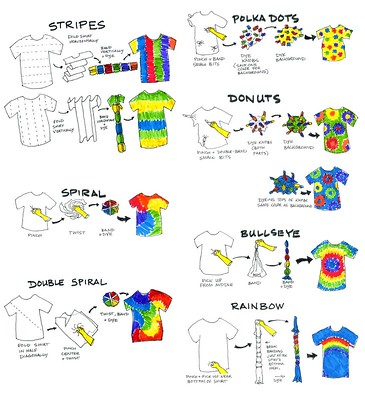

- Time Required
- 7–8 hours, including reading time
This module asks you to finish composing the instructions that you (or someone else) will use to conduct primary research for your recommendation report. You will grade your own work by comparing your project to the criteria listed in the checklist.
Just like last week, you are ultimately working on two projects this week. You will summarize your instructions process in the Methods section of your recommendation report and you will include your instructions in an appendix to the report.
Watch for additional tips on composing instructions in the “Canvas Announcements & Course Advice” on the Course Home. The posts also show up in the Twitter feed for @HokieTengrrl. If you read them and watch the related videos, be sure to note the time in your Weekly Work Log.
Objectives for this Week
By completing this week’s activities, you address the following course objectives:
- Analyze the rhetorical situation and determine the appropriate audience or users of written communication, considering the needs of global audiences and people with disabilities. [CLO 1]
- Conduct research appropriate to workplace problem solving, such as literature review, evaluation of online resources, interview, and site inspection. [CLO 2]
- Interpret research findings with understanding of ethical and human implications. [CLO 3]
- Use conventions of various workplace genres, such as proposals, instructions, correspondence, reports, and slide decks, with understanding of how the genre conventions can be used as heuristics and as principles of arrangement. [CLO 4]
- Collaborate with classmates in planning, researching, writing, revising, and presenting information. [CLO 5]
- Apply principles of effective visual design for print and electronic presentation, including hierarchical, chronological, and spatial arrangements. [CLO 6]
- Identify and apply the principles of effective style in the composing of usable, reader-centered written communications. [CLO 7]
Activities for this Week
Available Points: 60
Due Dates:
-
- Friday, March 12 at 11:59 PM: All activities due.
- Monday, March 15 at 11:59 PM: Grace period ends for all work.
📚 To Read This Week
- Review as needed: Markel & Selber, Chapter 20: “Writing Definitions, Descriptions, and Instructions,” pp. 555–579
- Instructions Project Criteria (webpage)
📝 To Write This Week
- Finish work on your Instructions Project.
- Complete the Instructions Project Checklist. You have an unlimited number of times to complete the checklist.
- Remember to submit your Instructions Project in Part 2 of the Week Eight module, once you earn full credit on the Checklist.
💬 To Discuss This Week
- Follow the instructions in the What Do You Need? Feedback Discussion to share what you have written with your group.
- As a group, work to ensure that every person in the group gets at least two responses.
📓 To Track This Week
- Track and reflect on the work you have done for the week in your WORKLOG, reviewing the Weekly Work Log Guidelines as needed.
- Complete the Week of 03/08 Self-Assessment to claim the points for the work you have done this week. You have an unlimited number of times to complete the self-assessment. Your points will be recorded automatically when you submit your quiz.
Photo credit: Tie-dye instructions by Kelly on Flickr, used under a CC-BY-SA 2.0 license.